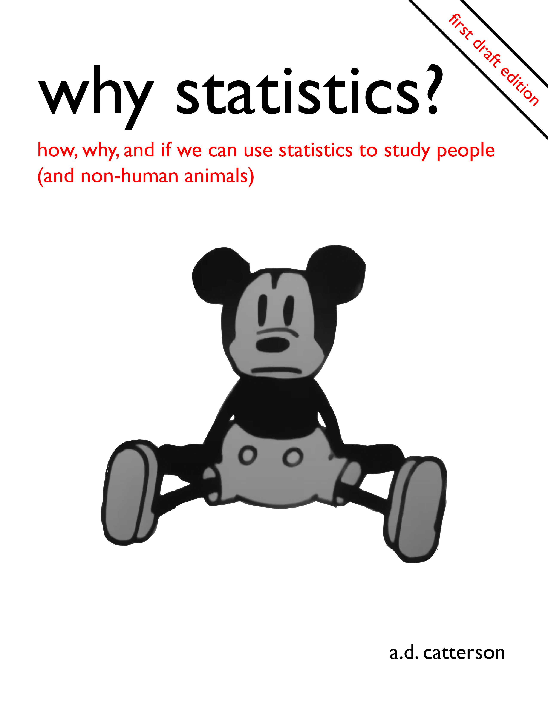

Why Statistics?
Hello!

Who Is This Book For?
This book - Why Statistics? - is being written to support students’ learning of the statistics, R programming skills, and research methods that are required of modern psychological scientists. Whew!
I’ve learned over the years that students approach statistics with a variety of intense emotions - many of them negative. For what it’s worth, I have been happy to see most students thrive in the class, and will do my best to support y’all and make this class (and book) a positive learning experienceTM.
To that end, please fill out this form (or talk to me in class) if you are confused or overwhelmed; this class work as well as it does because of past and present generations of students like you, and I hope that it will continue to improve thanks to present and future generations of students. If you want to use this text in your own class, reach out and I can send my lesson plans and assignments if they might be helpful.
What’s In This Book?
This book is organized into three sections. You can view these sections (and the chapters inside) by looking at the Table of Contents to the left.
Describing People : This first section focuses on how psychologists, we’ll discuss both how and why psychologists seek to learn what people (or non-human animals) are like (Chapter 1), the different types of data that psychologists collect on people (Chapter 2), the fancy terms that psychologists use to describe how people differ (Chapter 3), the methods they use to try and turn complex psychological states like happiness, statistics anxiety, or love into numbers (Chapter 4), and the ways that they try to give context to these numbers (Chapter 5). We will also learn about some of the research methods required to develop your own research ideas, and fit these ideas in the past research that has been done (or not done!) on the topic.
Predicting People : This section focuses on the ways that psychologists try and use statistics to make predictions (educated guesses) about what people are like. We’ll discuss how psychologists use the information they learn about people to make predictions about a person based on some other information (Chapter 6), how they make these predictions based on the categorical group the person belongs to (Chapter 7), how they try to make a guess about all people even though they are just studying a few (Chapter 8), and how they try to (Chapter 9). We will also learn about some of the research methods required to critically evaluate some of the important assumptions about research, to better understand how much faith to place in the results of a psychological study.
People Are Complex : The final section goes deeper into some of the more advanced statistics and methods that psychologists use to understand people in their full complexity. Specifically, we will discuss how psychologists use multiple bits of information to update their predictions about people (Chapter 10), how our predictions can change depending on other features of the person or situation (Chapter 11), and how researchers adapt their statistics to account for different types of data (Chapter 12). Finally, we’ll conclude with some rambling thoughts about the whole endeavor of statistics and research in psychology, and reflect on the friends we made along the way on this journey (Chapter 13).
There are three parts to every chapter; when you click on a chapter, you’ll see another table of contents appear that organizes these parts.
- Statistics : You’ll learn how and why psychologists analyze data (i.e., use math) to learn about people (or non-human animals).
- R Programming : You’ll learn how to use the programming language R to work with these data. We will go over examples, and there will be some helpful videos to watch.
- Research Methods : You’ll learn more about the decisions psychologists make when collect, analyzing, interpreting, and reporting data on people, and how these decisions can impact our understanding.
Goals of the Book
I hope that by the end of this book, you’ll feel confident in your ability to do the kinds of authentic tasks that a psychological researcher might do :
Analyze Data. I’ll provide you a dataset and / or statistical output, and you’ll use your knowledge of statistics, R, and research methods to answer questions about the dataset. What do we learn from the data? Why should we care?
Conduct an Independent Study. You will identify a research question that you care about, and then design a study, collect and analyze the data, and write up a report to share with us what you learned about the question you had (and what other questions remain).
We will talk much more about these assignments throughout the semester, and you will be well prepared for them if you follow along with the readings, quizzes, and homework assignments each week.
How Will I Use This Book for Our Class?
This semester, we’ll be taking a flipped classroom approach to our learning.
Before lecture you’ll read and watch some videos to be introduced to the content that we will then cover more deeply in lecture. You’ll also take a short quiz (no time limit, open-note, and you can take as many times as you’d like) that will encourage you to do the readings, and let me know what topics are still confusing to students.
During lecture we will start with a review of concepts you learned from the pre-readings, go over any common questions that students still have, and then use the remaining time to practice and discussing the skills and concepts. We will work on the homework assignment together
After lecture you’ll complete any homework that we didn’t finish in class, and then read for the next week’s lecture.
The flipped classroom approach requires y’all to do the readings and watch the videos before class, and requires me to write text and record videos that are engaging and helpful for the students in the class.
Please take a look at the syllabus (on our course page) for more information about assignments, grading, and other course policies. However, the TLDR is that this course is designed for YOU to learn, so let me know if something is not working (but know that you will also need to do the work and can expect some level of struggle, since that’s an important part of the learning process).
Who Is Writing These Words That I Am Reading?
My name is Arman Daniel Catterson, and I’m very very very lucky to be a professor in the Bay Area at Diablo Valley College (tenured) and at UC Berkeley (continuing lecturer), who has been teaching some version of this class since Summer 2015. Feel free to say “hi” if you see me on campus :) or hit that “SUBSCRIBE” button on YouTube. Thank you for reading.